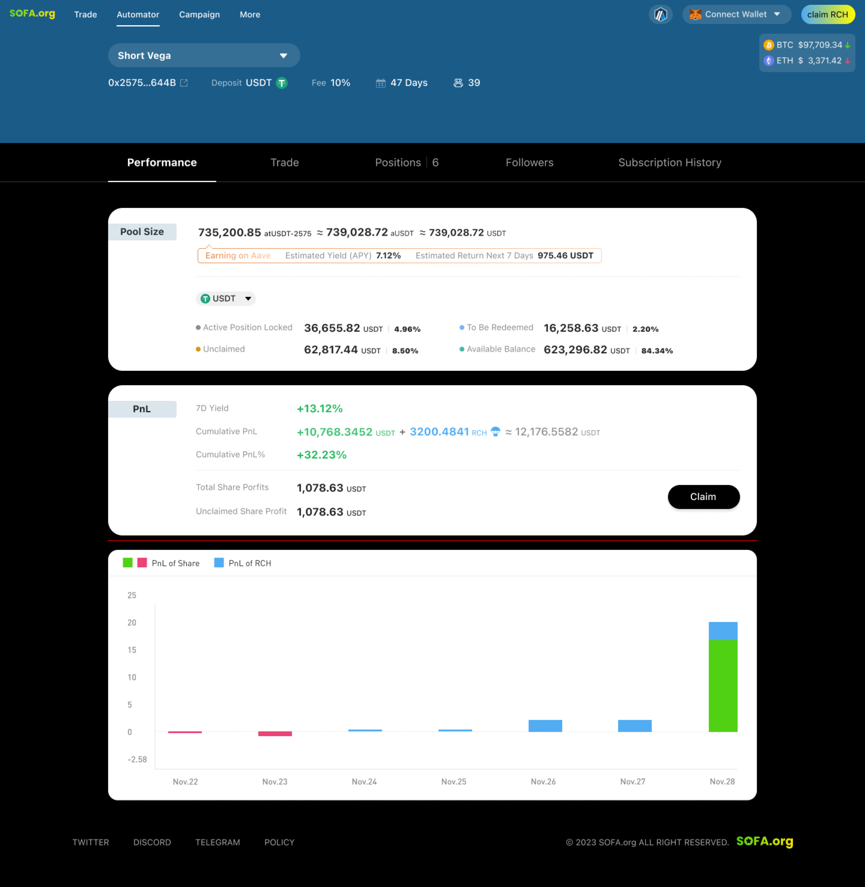

Automator
Introductio
In nostra missione ad democratizandum optionum negotiationem pro massis, turma SOFA creavit Automator ut intuitivum modum pro usoribus ad lucrandum strategiam fructuum passivorum. Per communitatem administrantium strategiarum, communiter notam Optivisors, usores possunt participare in suis carissimis strategiarum administratis in compensationem pro parte parva lucri. Hic modelus win-win praebebit accessum decentralizatum et in catena pro depositariis ad lucrandum varias qualitatis altae reditus cum evolvente basi communitatis agnitae Optivisors.

Claves Features Automator
Design Communitatis Agens. Lanctio Automator reflectit nostram dedicationem ad engagementem communitatis, praebens instrumenta decentralizata ad democratizandum iter negotiationis optionum DeFi, dum expandit accessum usorum ad securas solutiones fructuum quae cum tempore evolvent.
Interface Intuitiva. Complexae strategiae optionum in intuitivam et simplicem usui interface distillatae sunt, dum praebent plenam transparentiam in catena et disclosurem strategiae consistentem cum ethos DeFi.
Mercatus Agnosticus. Fructum ex motibus volatilitate in utraque parte, cum productis SOFA dando Optivisors plenam flexibilitatem strategiae sine respectu ad prospectum mercatus.
Substantiales Gas Pecuniae. Optivisors poterit 'volvere' suas ongoing strategias in Automator sine additionalibus gas sumptibus, promovendo long-term lucrativitatem et sustenabilitatem.

Optivisors: Nostri Communitatis Strategiae Campiones
Una ex praecipuis notis Automator in sua communitate-agente accessu consistit. Per engagementem sapientiae collectivae nostrae communitatis DeFi, creatores strategiarum, id est Optivisors, possunt designare, exsequi, et monitorare ongoing strategias SOFA pro beneficio depositariorum passivorum. In compensationem pro sua peritia, Optivisors accipient partem totalis strategiae lucri ad creandum exitum win-win qui economicis incentivis concordat et promovet longam engagementem.
Dum SOFA pergit expandere suas productorum oblationes et connectivity in catena, Optivisors ludum magis et magis momenti in nostro ecosystemate agunt dum eorum strategiae in complexitate et ambitu crescunt. Expansio protocollo in instrumenta additamenta et connectivity CeFi offerunt milestones feasibiles ad quae spectare possumus, et hortamur ongoing feedback communitatis ut nos ad proximos gradus impellat.

Automator Laboris Fluxus

Automator FAQ
A. Quomodo operatur Automator?
Automator involvit tres principales participes: Usores, Optivisores, et Mercatus Creatores.
Usores
Usores possunt eligere suum praelatum Automator et depositum tokens. Sub peritia Optivisoris, Automator reddit, quae inter participes usores distribuitur. Praeterea, usores beneficium habent ex incitamentis $RCH token airdrops ut pars participationis eorum.
Optivisores
Optivisores responsabiles sunt pro creando Automatores et exsequendo strategias negotiationis—ut positi bullarii et bearish—per interagendum cum SOFA Vaults. Ut praemium pro sua peritia, Optivisores partem lucrorum merentur.
Mercatus Creatores
Simile aliis SOFA productis, Mercatus Creatores praebent pretium pro SOFA Vaults. Optivisores administratores haec pretia utuntur ad allocandum Automator pecuniam et participandum in SOFA Vault strategiis. Cum hae strategiae constitutae sunt, lucra secundum id distribuitur.
B. Quid feoda mihi imponuntur?
Protocolum 15% feodum servitii in lucris generatis ab Automatoribus imponit. Si nullum lucrum generatur, nulla feoda servitii imponuntur.
Optivisores etiam feodum administrationis constituere possunt cum creando Automator. Haec feoda tantum ad lucra pertinent sed in obligatione registrantur durante periodis damni. Optivisor tantum feoda administrationis iterum colligere potest cum cumulativa lucra Automatoris positiva fiunt.
C. Quomodo fieri Optivisor et creare Automator?
Quisquis Automator creare potest ut Optivisor. Tamen, unaquaeque oratio limitata est ad creando unum Automator per catena et genus depositi token. Ut strategiam quotam aperiat, Optivisor 500 $RCH tokens comburere debet.
D. Quid de feodis gas in Automatore?
Optivisor responsabiles sunt pro operiendo omnibus feodis gas ad transactiones exsecutas intra Automator.
E. Quomodo possum pecuniam meam retrahere post depositum in Automator?
Automatores funguntur sicut pecunia, cum periodo redemptionis ad administrandum liquiditatem et exsecutionem strategiae. Retractationes quovis tempore initiari possunt sed exspectare debent donec periodus lock-up finiat, quae usque ad 30 dies durare potest, ut a Optivisore durante creatione constitutum est.
F. Quid genera redituum exspectare possum cum Automatore?
Reditus Automatoris ex tribus principalibus componentibus constat:
Usura
- Pecunia in Automator depositum in protocolis humilis periculi, ut Aave vel Curve, automatice stakatur, generans usuram passivam.
- Hae reditus in tempore reali renovantur et usoribus distribuitur secundum partem eorum cum retrahendo.
Trading PNL
- Reditus ex strategis negotiationis Optivisor generati
- Hi reditus tantum post expirationem strategiae negotiationis reflectuntur, permittentes Optivisor aditiones vindicare. Usores suam partem accipiunt cum recessu.
$RCH incentivum
- $RCH token airdrops per activitates negotiationis Optivisor meriti.
- Airdrops quotidie distribuentur secundum actuales possessores Automatoris et eorum respective partes possessionis. Usores possunt $RCH tokens suos directe ex pagina Claim $RCH vindicare.
G. Quae sunt pericula cum usus Automatoris coniuncta?
Automatores pericula involvunt dum Optivisor pecunias usorum ad negotiationem optionum et protocollo humilis periculi administrat. Optivisor aequilibrium inter usum redituum usurarum vel principii ad negotiationem decernit, quod gradum periculi Automatoris afficit. Unusquisque Automator habet limitis buffer, quod usque ad 99.9% variari potest, indicans portionem pecuniarum reservatarum pro protocollo humilis periculi. Usores specificum buffer pro unoquoque Automatore videre possunt ut unum eligant quod cum sua tolerantia periculi congruit. SOFA negotiationem sine periculo non praestat, et amissio principii possibilis est. Tolerantiam periculi tuam diligenter aestima antequam participes.
H. Quomodo generatur et distribuitur $RCH airdrop ad rationem usoris?
$RCH tokens per activitates negotiationis Optivisor merentur et a usoribus postea vindicari possunt, sicut in aliis SOFA Vaults. Potes hic informationem de $RCH airdrop videre: https://docs.sofa.org/en/tokenomics/